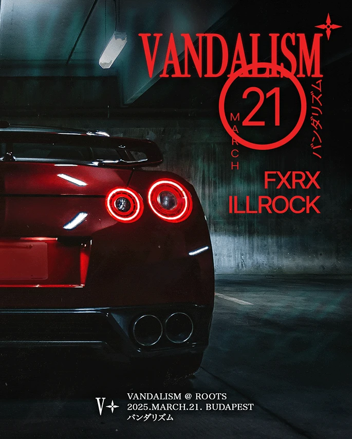
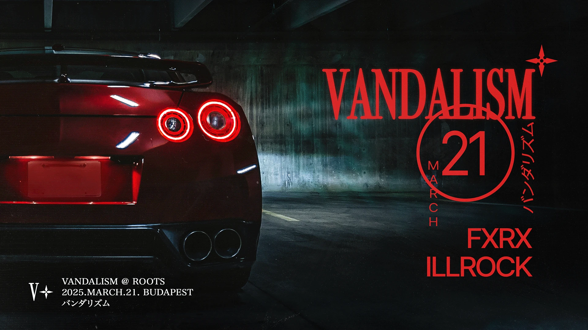
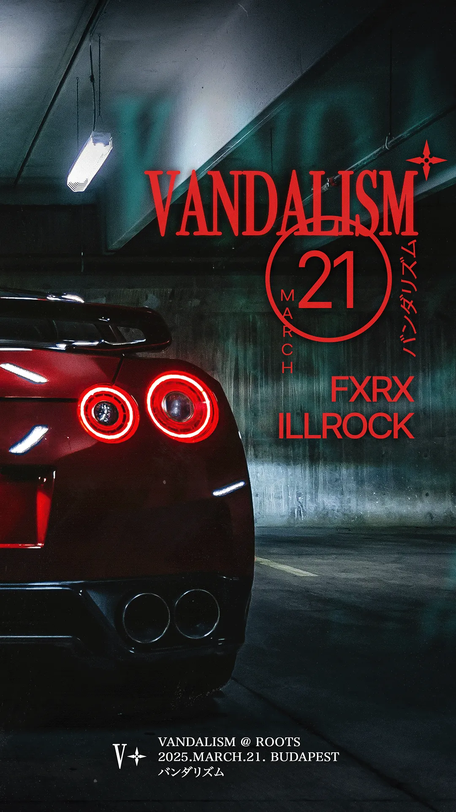

Vandalism @ Moodboard 2025.SEPT.25. Budapest バンダリズム
A következő buli flyerének képi irányai. Az alapváz a ROOTS-os flyerből jön, a kulcsvizuál három irányban változhat: A Wangan / mélygarázs, D tuningmatrica, F drill noir. A négyzetes mintalapok saját vázlatok, a linkek valódi fotós referenciák.
バンダリズム
V✦
基本 · alapváz
Ami minden flyeren fix



ROOTS · 2025.03.21.4:5 · 16:9 · 9:16
Logó
A dobócsillag mindig a felirat jobb felső sarkán ül. Lapos piros vagy fehér változatban, a TELEP-es krómozás effektként rátehető.
Dátum
MARCH
21
Körbe írt nap nagy groteszk betűvel, mellette betűnként függőlegesen a hónap. A logó rálóghat a kör tetejére.
Line-up
FXRX ILLROCK
Groteszk, közepes vagy félkövér súly, szoros betűköz, jobbra zárva, piros.
Katakana
バンダリズムVékony gothic betű, függőlegesen a dátumkör mellett.
Infóblokk
VANDALISM @ ROOTS 2025.MARCH.21. BUDAPEST バンダリズム
Mincho betű (japán talpas), fehér, három sor, alul a sarokban, a V✦ jel mellett.
Textúra
Szemcse, finom por és karc, sötét szélek.A kép sötét tónusú, a piros a fényforrásokból jön (lámpák, féklámpa), nem ráfestett szín.
Jelpiros#D52727
Éjfekete#0A0B0C
Beton#2E403F
Neoncső-zöld#6F8F8A
Papírfehér#EDE9E1
配色
haishoku · színrend
Paletta a háttérképből
A flyer színei mindig az aktuális háttérképből jönnek. Az oldal kiszámolja a kép fő színeit, és mindegyikhez szerepet rendel. A háttér a kép legsötétebb nagy felülete lesz, a kiemelő a legerősebb fényforrás. Ezt kapja a logó, a dátum és a line-up. A szöveg papírfehér marad, a kép árnyalatával tonizálva. Válassz mintát, vagy tölts fel saját képet.
MARCH21バンダリズム
FXRX ILLROCK
VANDALISM @ ROOTS 2025.MARCH.21. BUDAPEST バンダリズム
Húzz ide egy képet, vagy válassz fent. A kép nem kerül fel sehova, csak a böngésződben dolgozom fel.
A kép színei (k-közép klaszterek, arány szerint)
Szabály a Design Systemhez
Háttér: a kép legsötétebb nagy felülete, sötétítve és kicsit tompítva. A kép szélén ebbe fut ki az átmenet.
Közép: a leggyakoribb középtónus, például a beton vagy az aszfalt. Keretekhez, vékony vonalakhoz használható.
Kiemelő: a legtelítettebb fényforrás, egységes világosságra hozva. Ezt kapja a logó, a dátumkör, a line-up és a katakana. Ha a kép szinte szürke, a Jelpiros (#D52727) lép be.
Második fény: a másik fényforrás, ha az árnyalata legalább 40°-kal eltér. Csak kis felületen, például a 140 BPM jelölésben.
Papír: majdnem fehér, a kép árnyalatával tonizálva. Ezt kapja az infóblokk és a V✦ jel.
Kontrasztminimum: a papír a háttéren legalább 7:1, a kiemelő legalább 3:1. Ha nincs meg, a kiemelő világosodik, amíg eléri.
A
湾岸 · 地下駐車場
Wangan éjfélkor / mélygarázs
Hangulat
A ROOTS közvetlen folytatása. Éjszakai gyorsforgalmi út Tokió és Jokohama között, nátriumlámpás alagutak, a Daikoku parkoló spirálja, mélygarázs neoncsővel. Az autó csak részletként jelenik meg: féklámpa, hátsó szárny, kipufogó. A fény meséli el a sebességet.
A flyeren
Fotós kulcsvizuál, az autó a kép egyik szélén, levágva.
A logó és a dátum a sötét, üres oldalon, pirosban.
Mozgás: hosszú záridős fénycsíkok, elmosódott háttér.
Második kiemelő szín lehet a nátrium-narancs, de csak a fényekben.
A 90-es évek japán tuningműhelyeinek grafikája: szponzormatricák, rajtszám, szélvédőcsík, figyelmeztető címkék, az Option magazin borítói. Ez inkább grafikai réteg, mint önálló kép. Egy sötét autós fotóra vagy egy tiszta fekete lapra kerül rá.
A flyeren
Az előadók neve matricaként jelenik meg, mintha szponzorok lennének.
A 140 BPM a fordulatszámmérő piros mezője.
A dátumkör rajtszám-táblává alakítható.
Csak kitalált műhelyjelek szerepeljenek, valódi márkalogó nem.
Kulcsszavak
decal sheet
sticker bomb
windshield banner
race number
Option magazine
Tokyo Auto Salon
Matricaív kitalált jelekkelsaját vázlat140 BPM mint piros mezősaját vázlatSzélvédőcsík + rajtszámsaját vázlat
A drill és a 140-es UK bass hangulata. Esős, szemcsés éjszaka, biztonsági kamera képe időbélyeggel, vakus fotó durva fény-árnyékkal. A Burial-borítók elmosott városa japán közegben. Ez a legsötétebb irány, a piros itt a legkevesebb.
A flyeren
A kép nagy része szinte fekete, a figura vagy az autó csak sejlik.
Kamera-felület: időbélyegben a buli dátuma, REC jel, képkocka-szám.
Erős szemcse, esőcsíkok, kicsit elcsúszott színcsatornák.
A logó fehér, a piros csak a REC jelben és a dátumban.
Kulcsszavak
CCTV still
rain night
flash photo
film grain
Burial
hooded figure
Kamerakép időbélyeggelsaját vázlatEső és elmosott fényeksaját vázlatVakus fény, szemcsesaját vázlat
Ha kéred, a linkelt szabad licencű oldalakról (Unsplash, Wikimedia) valódi fotókat is beteszek irányonként. Ehhez engedélyt kérek a letöltésre. Utána jöhet a Claude Design Design System és a prompt.
A mintalapok saját vázlatok, nem kész flyerek. A japán feliratokat (irányok alcímei, katakana) használat előtt ellenőriztesd anyanyelvi szakemberrel. A linkelt képek licencét külön ellenőrizni kell, a Pinterest- és Behance-anyagok csak inspirációk.